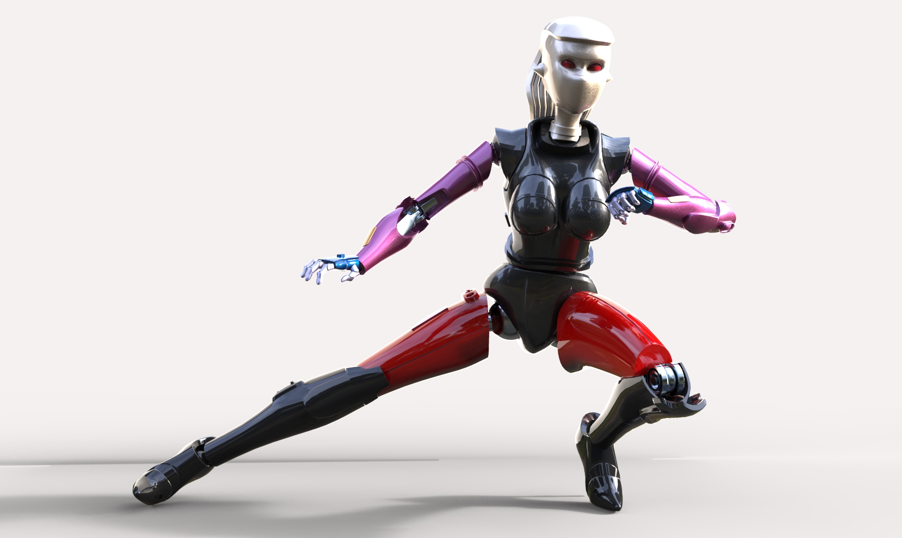
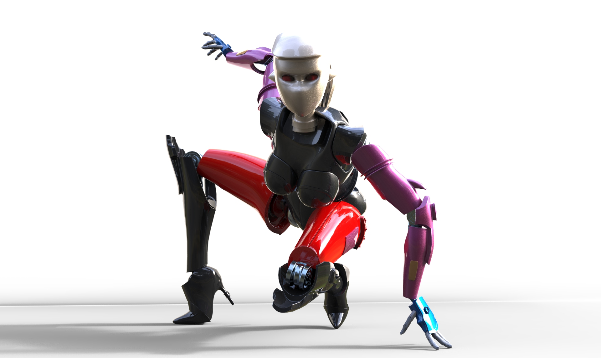
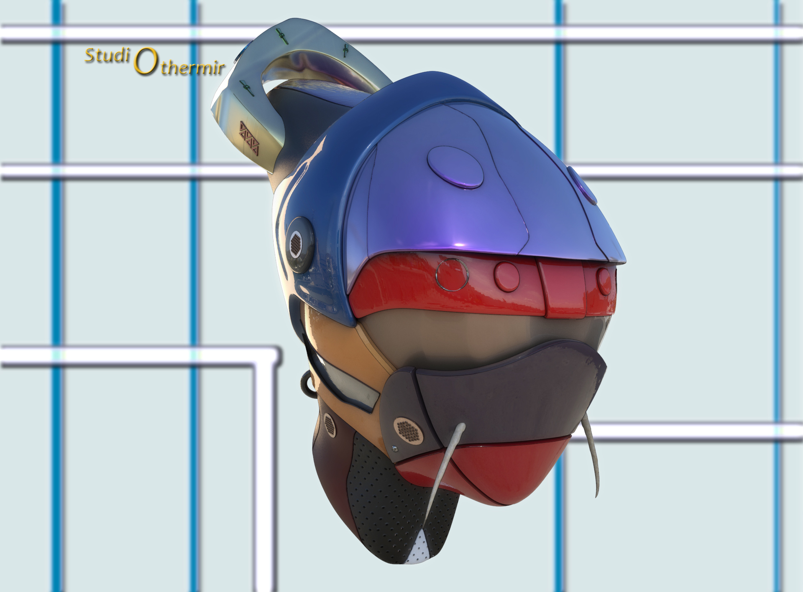
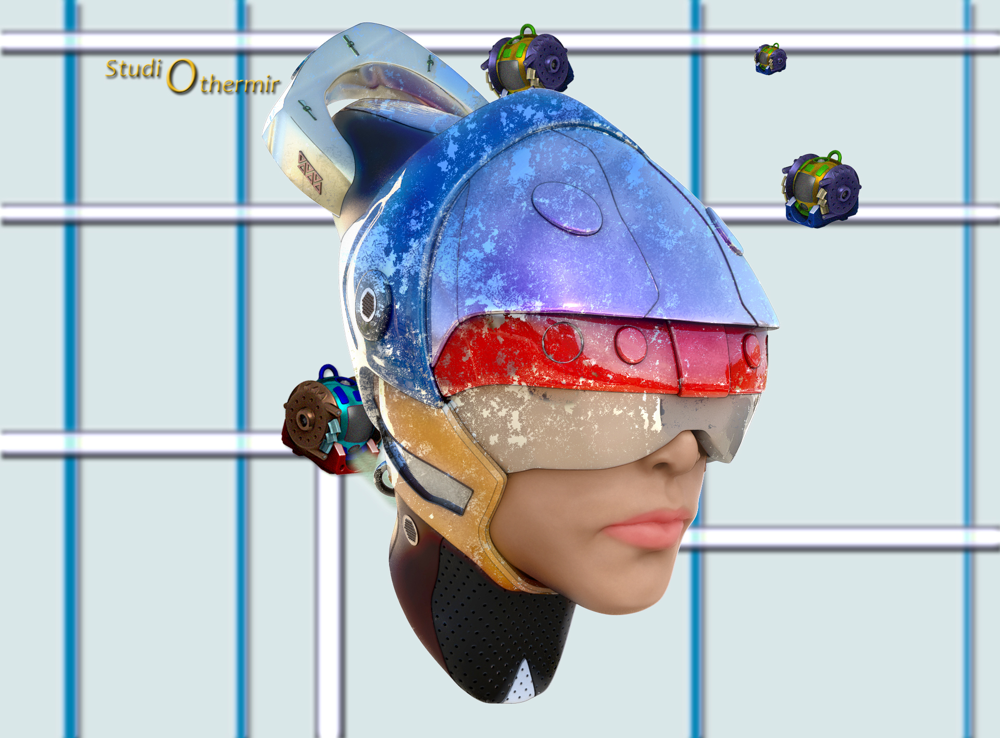
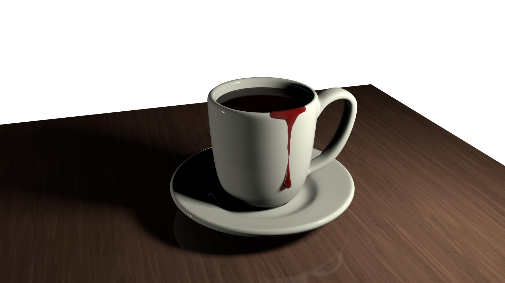
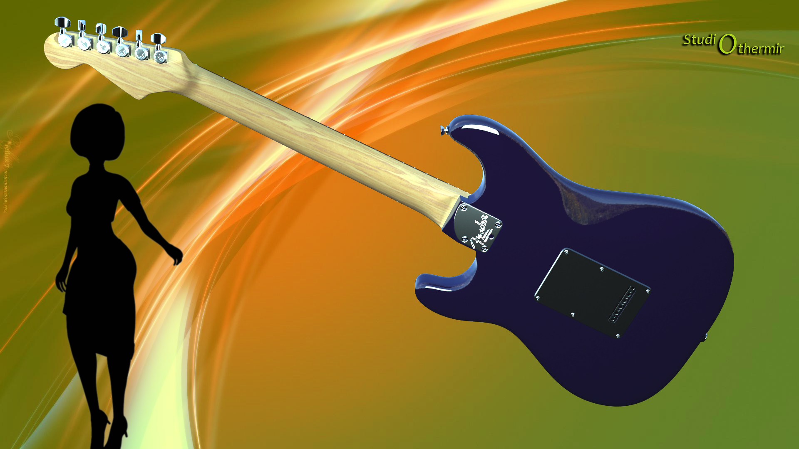

Studio Othermir was more or less started after I transitioned from 2D drawing to 3D modelling then sculpting. The name was in part inspired by a number of Japanese animation houses that were called "Studio insert name here" such as Studio Pierrot (who has made a lot of money off of a blond headed ninja who likes to sneak around in orange clothes..., but that's going off topic).
The Othermir name itself was inspired by Lord of the Rings. When The Two Towers came out, I couldn't remember or couldn't bother to remember the name of Boromir's brother, Feromir. So, obviously, the solution was to just call him Othermir. And so the name Studio Othermir was born.
Of course, it's not an actual 3d studio, just more a nice way to collect the finished projects I've done in Maya and ZBrush. While both software can be used for hard surface and organic modeling, I prefer Maya in hard surface and ZBrush in organic. I feel I've gotten pretty proficient at the modeling over the years, now it's time to nail down rendering then try more dynamic scenes....assuming I don't destroy my computer in the attempt...
So here are some of the things I created. Definitely a sci-fi trend in it. As I finish other things, I'll add them as well. The most recent scene I'm working on may be at the point where I can't go much further with the resources my PC has. So if that's the case, then on to a sniper rifle!
* I definitely don't own Star Wars or Fender

I modeled a Tie Interceptor over the course of 2 months and made the maximum use of symmetry. I made it as a challenge to see just how far I could go.

This model was done as my first real experiment as to what I could do with modeling also to be able to pose.

So here's the first attempt as posing the 'fembot'. Fairly simple pose and no real issues.

And here's the second attempt. Turned out reasonably fine, but there were definitely some overlapping issues.

This Twi'lek bust was my first attempt at 3D sculpting in ZBrush and probably my most overt Star Wars project at that point. Thankfully the Star Wars creative team decided that Twi'lek women don't have human like ears
so I got to cheat. Also taught me that I should do more research before getting into a project as the lekku (the things dangling from her head) should be longer.

These two masks were part of another Digital Tutors tutorial on doing some hard surface sculpting. So I started with a pre-sculpted head and built a helmet around it. The first image is essentially the show room model of the helmet.

The second one shows years of use and slight disrepair resulting from the harsh environment of Photoshop. Then little robot things from a different hard surface sculpt decided to invade.

A few months after I finished the Interceptor, my sister asked me to make her an image as a possible book cover. So of course, the image she wanted was a
coffee cup filled with blood and a trickle of blood running down it because, you know, vampires. While it was a favor for family, it's really my first time trying to take an image in someone else's head and make it how they want it.
Digital Tutors, now a part of Pluralsight, is a fantastic source for learning how to use these programs on your own. The modeling of this Stratocaster was directed by such a tutorial.

The rendering and material design was done on my own using resources on how to set up shading networks. And it was this model that gave me the confidence to try a complex model on my own.
Animator me wanted to go back in time several years to have a conversation with modeler me to tell me how I should have modeled
it more with animation in mind. This animation also taught me that I really need to use a Render Farm to render it. 12 seconds took 3 weeks....
I also learned that if you notice something not quite right in frame 1, don't wait until frame 40 to figure out what the problem is.
I had wanted to use a clothing simulator and also to make a stylized, more cartoon-like, figure sculpt, so this is the result.
I also learned that I could make a turntable animation in ZBrush so I could show off all the angles that wouldn't be seen in a static view. I would do the same thing with the Tie Interceptor, but I would like to use my computer.